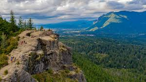
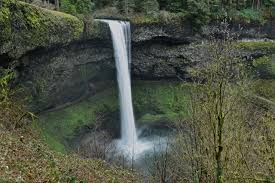
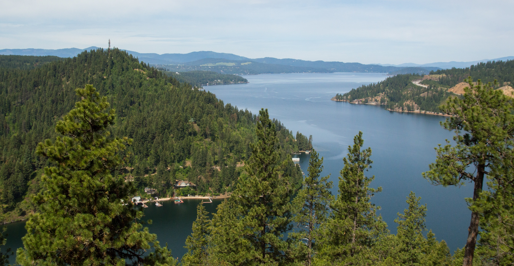
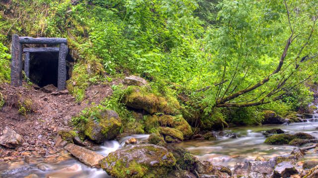

Best Hikes in the Pacfic Northwest
Best Hikes in Washington
- Skyline Loop - Mt. Rainier National Park
- ★4.8/5 Difficulty: Hard
- Check out this 5.7-mile loop trail near Paradise, Washington. Generally considered a challenging route, it takes an average of 3 h 30 min to complete. This is a very popular area for hiking and running, so you'll likely encounter other people while exploring. The best times to visit this trail are June through September. You'll need to leave pups at home — dogs aren't allowed on this trail.
- Rattlesnake Ledge Trail - Rattlesnake Mountain Scenic Area 
- ★4.7/5 Difficulty: Moderate
- Head out on this 5.3-mile out-and-back trail near North Bend, Washington. Generally considered a moderately challenging route, it takes an average of 3 h 4 min to complete. This is a very popular area for hiking and running, so you'll likely encounter other people while exploring. The trail is open year-round and is beautiful to visit anytime. Dogs are welcome, but must be on a leash.

Best Hikes in Oregon
- Trail of Ten Falls - Silver Falls State Park 
- ★4.8 Difficulty: Moderate
- Explore this 7.4-mile loop trail near Mehama, Oregon. Generally considered a moderately challenging route, it takes an average of 3 h 21 min to complete. This is a very popular area for hiking, so you'll likely encounter other people while exploring. The best times to visit this trail are May through October. You'll need to leave pups at home — dogs aren't allowed on this trail.
- Multnomah Falls Trail - Columbia River Gorge National Scenic Area
- ★4.6/5 Difficulty: Moderate
- Experience this 2.3-mile out-and-back trail near Bridal Veil, Oregon. Generally considered a moderately challenging route, it takes an average of 1 h 30 min to complete. This is a very popular area for hiking, so you'll likely encounter other people while exploring. The trail is open year-round and is beautiful to visit anytime. Dogs are welcome, but must be on a leash.

Best Hikes in Northern Idaho
- Mineral Ridge National Recreation Trial - Idaho Panhandle National Forest 
- ★4.6/5 Difficutly: Moderate
- Discover this 3.0-mile loop trail near Coeur d'Alene, Idaho. Generally considered a moderately challenging route, it takes an average of 1 h 39 min to complete. This is a very popular area for hiking, so you'll likely encounter other people while exploring. The best times to visit this trail are April through November. Dogs are welcome, but must be on a leash.
- Pulaski Tunnel Trail - Idaho Panhandle National Forest 
- ★4.6/5 Difficulty: Moderate
- Enjoy this 3.5-mile out-and-back trail near Wallace, Idaho. Generally considered a moderately challenging route, it takes an average of 1 h 47 min to complete. This is a very popular area for birding, cross-country skiing, and hiking, so you'll likely encounter other people while exploring. The trail is open year-round and is beautiful to visit anytime. Dogs are welcome, but must be on a leash.
The Pacific Northwest Trail
Escape to the breathtaking landscapes of the Pacific Northwest Trail, where rugged mountains, lush forests, and pristine lakes await your exploration. Embark on a journey through some of the most stunning scenery in the United States, immersing yourself in the raw beauty of nature. Whether you're an avid hiker seeking adventure or simply craving a serene getaway, the Pacific Northwest Trail offers something for everyone. Experience the wonder of this majestic trail firsthand by watching our captivating YouTube video, where you'll be transported to the heart of the wilderness and inspired to embark on your own unforgettable adventure. Come discover the magic of the Pacific Northwest Trail today!
Interesting Visualization of Wildfire History in the PNW

Top of Page